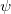

Derivative of the psi function (x)
double real_polygamma( double x, int k )
Returns the value of the kth derivative of the psi functions (x) for real x and k=0,1...,6
EX1
void real_polygamma_ex1() { int k =2; double x =0.7; printf("%2ld %4.1f: %12.4e\n",k,x,real_polygamma(x,k)); }
origin.h